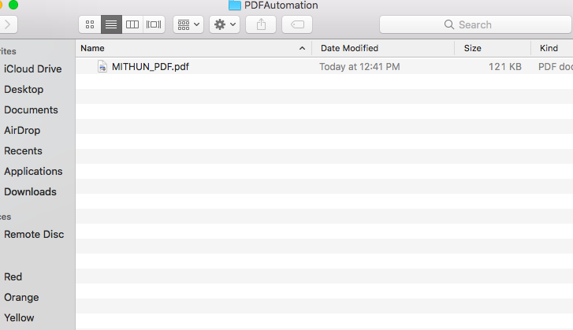
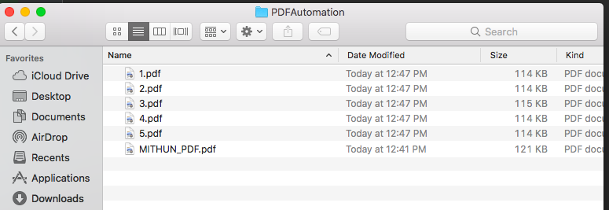

In this section we will explain how to split a single PDF file into multiple PDFs. Would split based on its page number.
Let's take an example of a PDF file which has 5 pages. Now if we split it , we will get 5 PDF files , where each of these PDF is single page of parent one.
First create an File object of PDF file , then load the PDF file.
File file =new File("/Users/path/Downloads/PDFAutomation/"+"MITHUN_PDF.pdf"); //Loading an existing PDF document PDDocument document = PDDocument.load(file);
Create a Splitter object
Splitter splitter = new Splitter();
splitting the pages of a PDF pages
List<PDDocument>Pages = splitter.split(document);
Creating an iterator object
Iterator<PDDocument>iterator = Pages.listIterator();
Saving splits as individual PDF document
int pdfPageNumber = 1; while(iterator.hasNext()) { PDDocument pd = iterator.next(); pd.save("/Users/mithunroy/Downloads/PDFAutomation/"+ pdfPageNumber++ +".pdf"); } System.out.println("PDF File Split is Done");
Closing parent PDF object
document.close();
Before PDF Split , where "MITHUN_PDF.pdf" has 5 pages. After split , it will create 5 PDF files of each of these pages.

Complete Code can be written as below:
After PDF Split
